Growing Hope, One Garden at a Time
Together we can transform neglected urban spaces into vibrant community gardens that bring people, nature and neighbourhoods to life.
Explore The Movement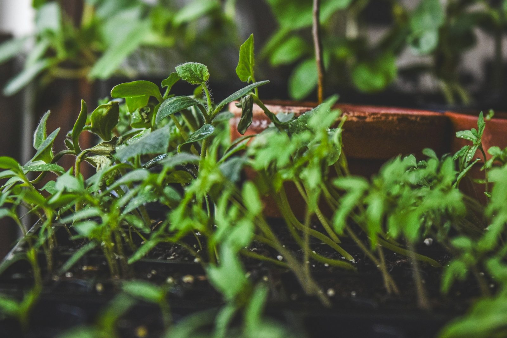
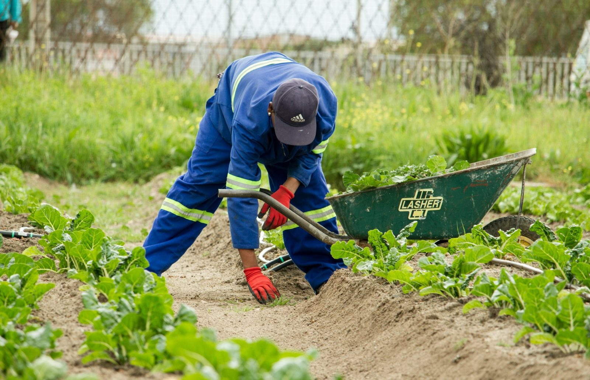
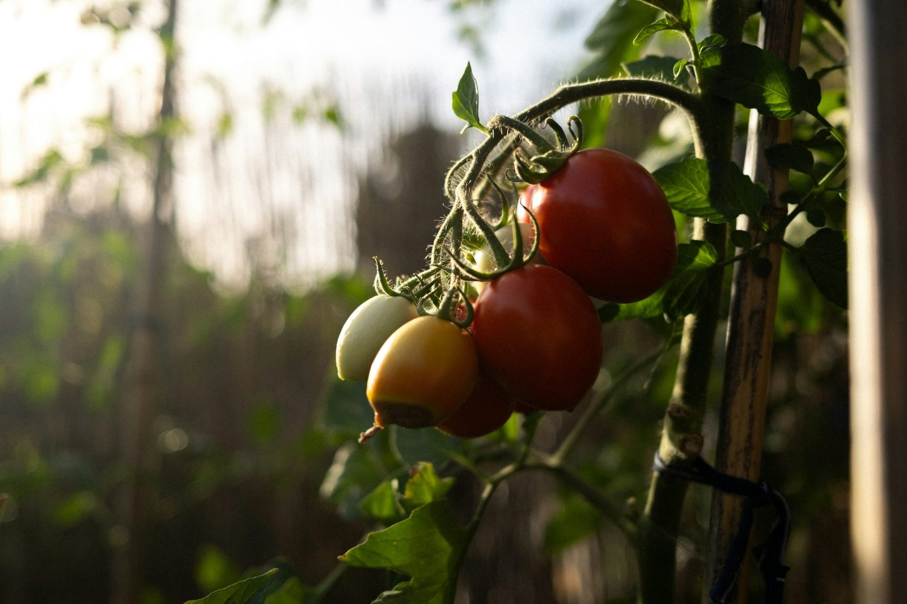
OUR MISSION
Growing communities through gardening
Guerrilla Gardening Kenya is a community-driven initiative that inspires people to transform unused urban spaces into beautiful green areas.
01Greener spaces
Transform unused urban spaces into vibrant, welcoming gardens.
02Stronger communities
Bring people together through gardening, collaboration and shared spaces.
03A healthier future
Support biodiversity and create healthier, greener neighbourhoods.
Why It Matters
Many urban communities have unused or neglected spaces that can become safe, welcoming places filled with plants and life.
Community gardens improve local environments, support biodiversity and create opportunities for people to work together.
Community Projects
Discover community gardening projects that demonstrate how small actions can make a lasting difference. From planting native flowers to creating shared vegetable gardens, every project contributes to greener and healthier neighbourhoods.
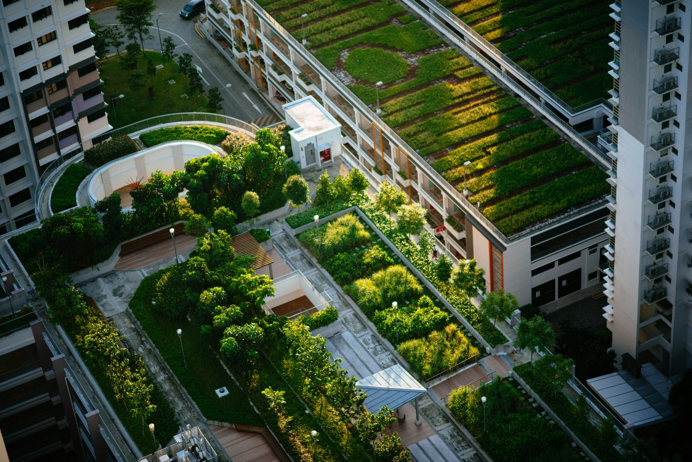
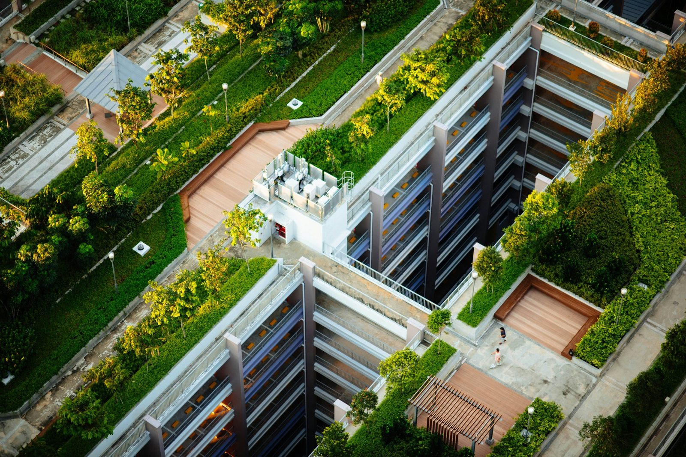
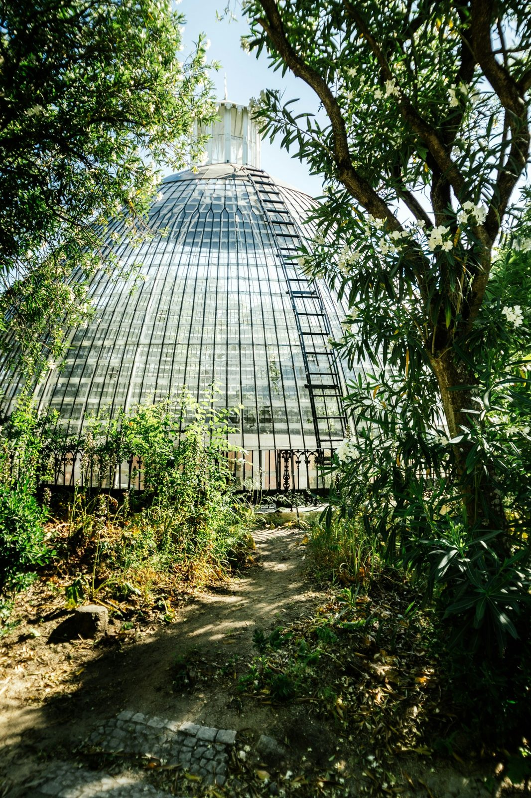
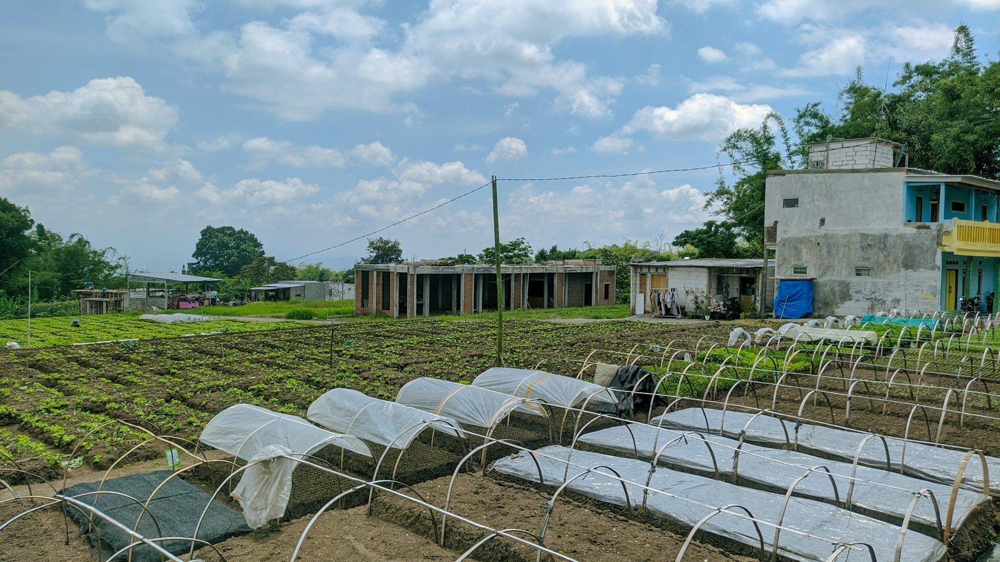
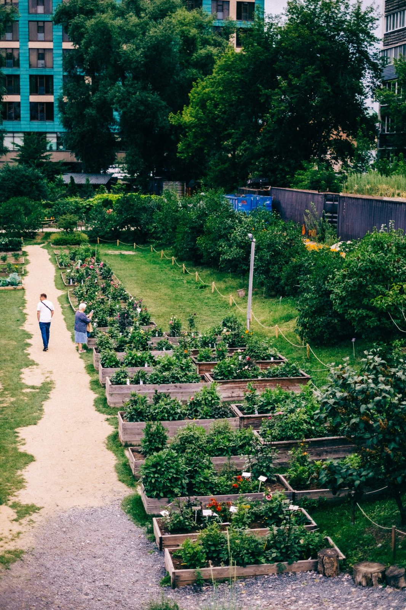
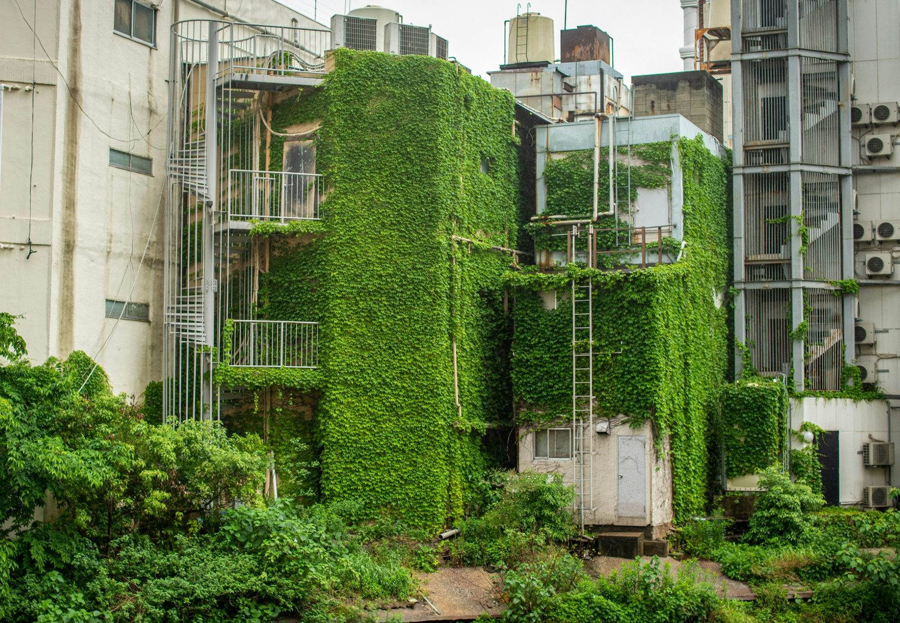
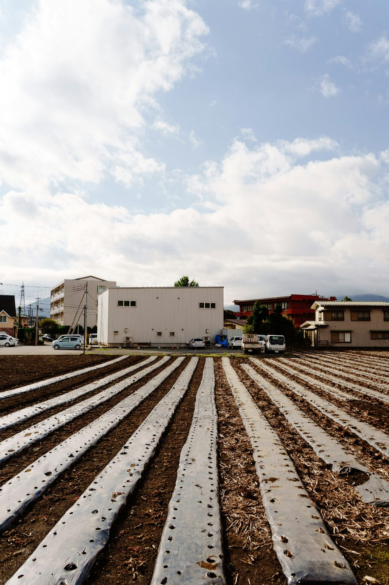
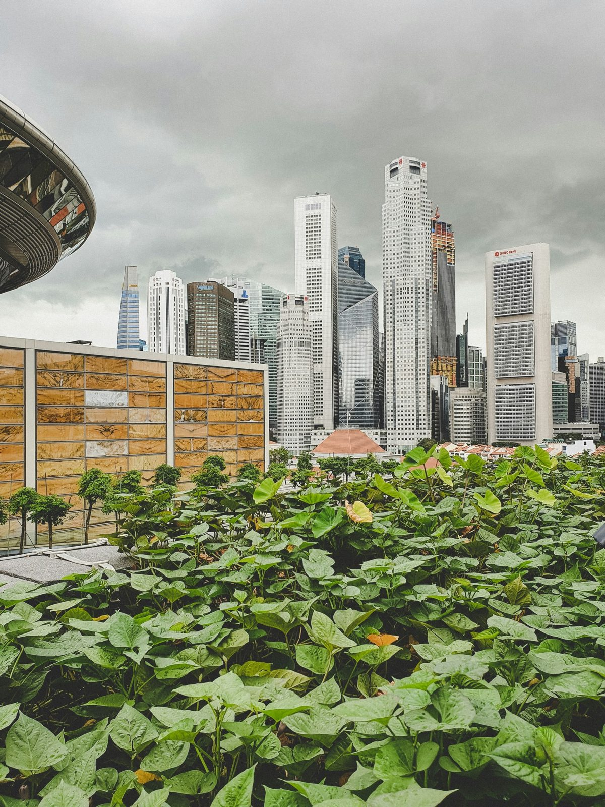
Native Plants
Choosing the right plants is essential for sustainable gardening. Explore native and climate-friendly plants that support local wildlife, require less water and thrive in Kenya's growing conditions.
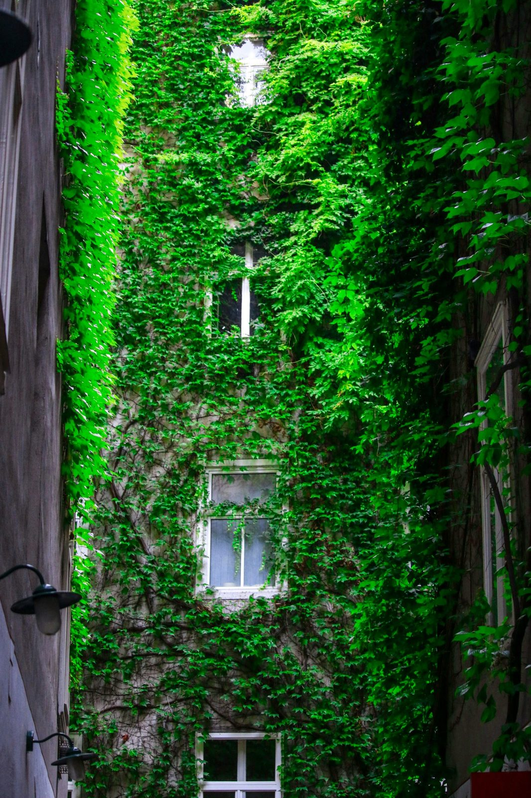
Small actions can create big change.
Everyone can make a difference. Whether you plant a tree, care for a community garden or simply inspire others, every action helps create greener neighbourhoods.
- 01Plant native flowers
- 02Plant a tree
- 03Start a small vegetable garden
- 04Help clean an unused public space
- 05Share seeds or plants with neighbours
- 06Inspire children to grow food and flowers
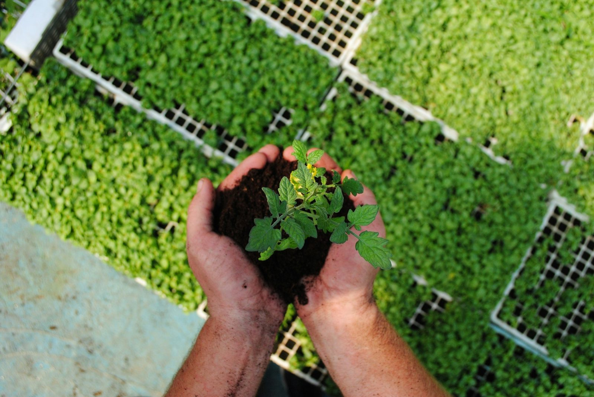
Frequently Asked Questions
New to guerrilla gardening? Here are some of the questions people ask most often.
Guerrilla gardening is the practice of planting flowers, trees or vegetables in unused or neglected public spaces to make neighbourhoods greener, healthier and more welcoming. It is a community-driven movement that encourages people to care for their environment through positive action.
The rules vary depending on the location and the type of land. Whenever possible, we encourage working together with local communities, schools and property owners to create safe, sustainable and respectful gardening projects.
Many native and drought-tolerant plants grow well in Kenya. Trees such as Moringa and Croton, herbs like Lemongrass and Rosemary, and flowers such as Hibiscus and African Marigold are great choices because they support biodiversity and require relatively little maintenance.
Start by talking with neighbours, local schools or community groups about improving an unused space. Choose suitable plants, organise volunteers and work together to maintain the garden. Even a small project can make a lasting difference.
GET INVOLVED
Turn small actions into lasting change.
Join a growing community of volunteers who believe that greener neighbourhoods create healthier and happier lives.
Whether you have a few minutes or a few hours, your contribution can make a real difference.
Join the Movement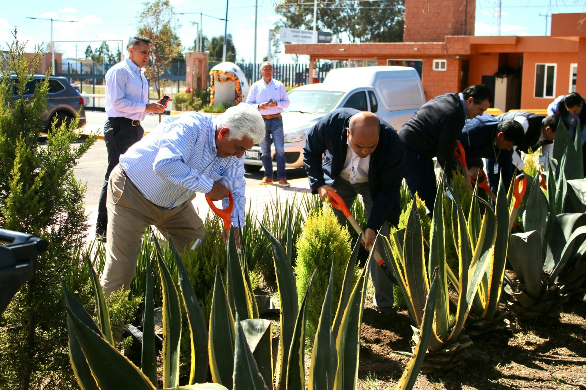